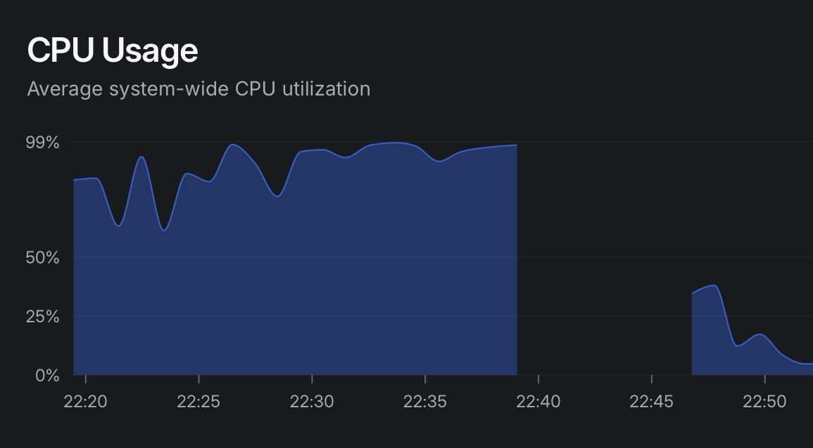
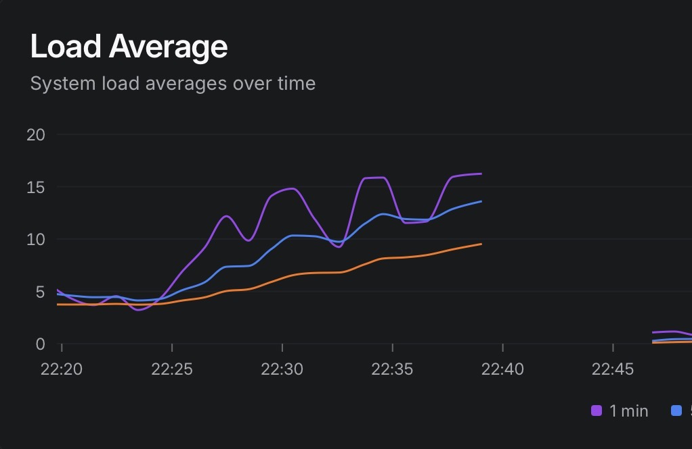
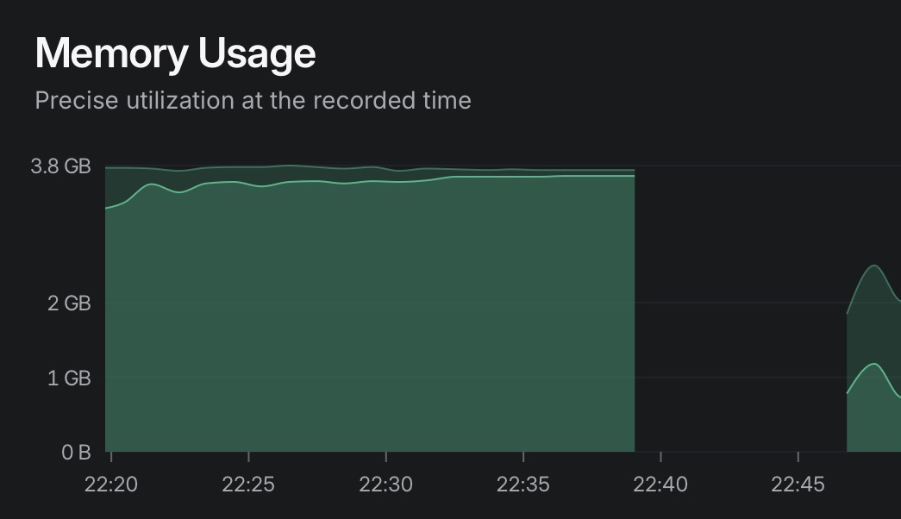
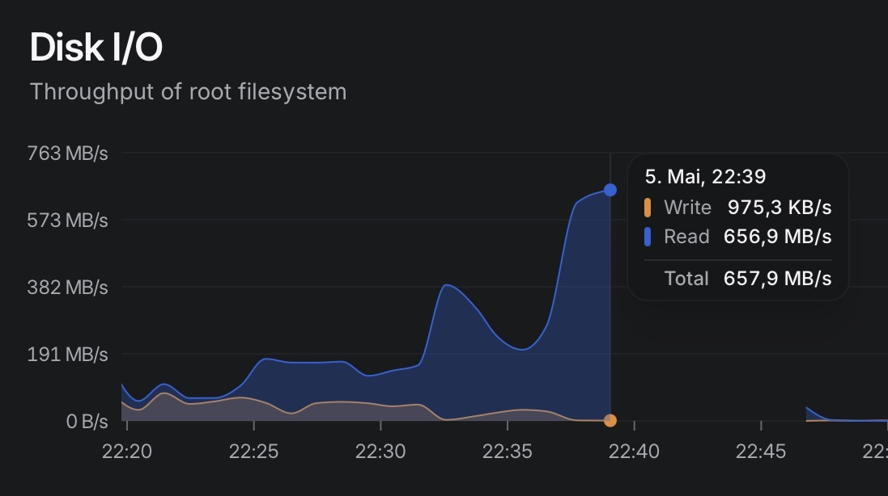

05 May 2026 | Severity: SEV-1 | Host: ubuntu-4gb-nbg1-4
Production Incident Report
What happened
A single Python service running a Discord bot entered a tight error loop caused by SQLite write contention.
This loop rapidly consumed all available CPU resources, starving every other system process.
The affected service (anticheat-bot) repeatedly attempted database writes using SQLite.
Due to concurrent access, SQLite returned database is locked errors.
Instead of backing off, the bot continuously retried the operation.
This created a CPU spin condition — a state where the process never sleeps, never yields, and continuously executes retries at maximum speed.
sqlite3.OperationalError: database is locked
discord.client: Ignoring exception in on_message
await db.commit()
Why the system collapsed
Once the Python process saturated both vCPUs, the entire system began to degrade:
SSH stopped receiving CPU time → connection freeze
Docker daemon could not respond → socket failures
containerd lost RPC synchronization
system monitoring stopped reporting data
This was not a crash. The system remained running but became fully CPU-starved.
dockerd: write unix /run/docker.sock: broken pipe
containerd: ttrpc received message on inactive stream
Health check timed out starting container health check
When CPU is fully saturated, Linux does not “fail” — it stops scheduling time for other processes.
This creates the illusion of a crash while the system is technically still running.
Evidence (visuals)
These graphs show the system state during and after the incident.
CPU saturation

System load

Memory usage

Disk activity

Resolution
Forced VPS restart
Process state lost due to system starvation
Preventive actions
Replace SQLite with PostgreSQL or queued writes
Add retry backoff on database lock errors
Throttle Discord event handling
Introduce CPU limits (cgroups / Docker limits)
Improve service isolation for bot workloads
Conclusion
The incident was caused by a single Python service entering an unbounded retry loop due to SQLite contention.
This resulted in full CPU starvation, cascading system degradation, and total loss of service responsiveness.
Key lesson: a single unbounded async loop can bring down an entire VPS without crashing it.